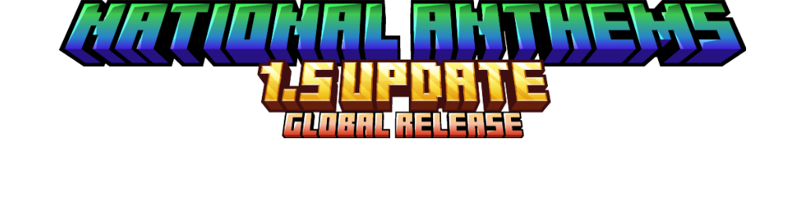
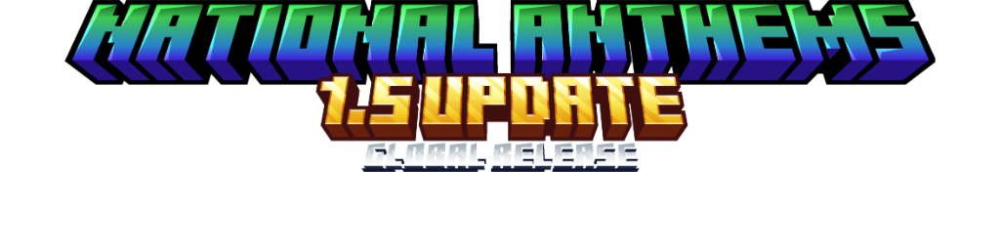

<!DOCTYPE html>
<html lang="en">
<head>
  <link rel="icon" href="../img/themes/active/favicon.png">
  <title>Old National Anthems News | Blog | Donne431</title>
  <meta name="viewport" content="width=device-width, initial-scale=1, maximum-scale=1" />
  <meta name="title" content="Old National Anthems News | Blog | Donne431">
  <meta name="description" content="Welcome to my website! I am Donne431, just a guy, who love made a modifications for games. I'm 16 years old, and I'm from Crimea, Russia (demi-island washed by the Black and Azov Sea). I also like to create almost any content for Minecraft, that is: mods, maps, resource packs, servers.">
  <meta name="keywords" content="Minecraft, Forts, Mods, Resourcepacks, Datapacks, Donne431">
  <meta name="theme-color" content="#4bb4f1">

  <script src="https://code.jquery.com/jquery-3.3.1.min.js"></script>
  <script src="https://cdn.jsdelivr.net/npm/handlebars@latest/dist/handlebars.js"></script>
  <script src="https://mcapi.us/scripts/minecraft.min.js"></script>
  <script src="../js/main.js"></script>
  <script src="../config.js"></script>
  <script src="../js/lightbox.min.js"></script>

  <script>tosAgreed = true</script>

  <link rel="stylesheet" href="https://cdnjs.cloudflare.com/ajax/libs/font-awesome/6.7.1/css/all.min.css"/>
  <link rel="stylesheet" href="../css/style.css">
  <link rel="stylesheet" href="../config.css">
  <link href="../css/lightbox.css" rel="stylesheet" media="all">

</head>


<body>

  <div id="target"></div>

  <script id="template" type="text/x-handlebars-template">

  <header>
    <div class="hero" id="hero">
      <a href="#!"><h1 style="padding-top: 3%;"></h1></a>
    <p> </p>
    <div class="news-card" align="center">
      <a href="../" class="btn"><i class="fa-solid fa-house"></i> Home</a>
      <a href="../Blog" class="btn"><i class="fa-solid fa-newspaper"></i> Blog</a>
      <a href="#links" class="btn"><i class="fa-solid fa-share"></i> Links</a>
    </div>
    <p> </p>
    </div>
  </header>

  <section class="dark">
    <h1 id="news2"><i class="fa-solid fa-newspaper"></i> Old National Anthems News</h1>
    <p align="center">Time zone is UTC+3</p>
    <p></p>
    <div id="news">
<!--    <div class="news-card">
        <strong>(21.09.2023 18:33)</strong>
        <p> </p>
      </div>
    <p></p>
     <div class="news-card">
        <strong>(21.09.2023 18:30)</strong>
        <p> </p>
Hello, now I will have a small vote: <br>
Leave the craft recipes in mod? <br>
🟩 - Yes <br>
🟥 - No <br><br>
🟥 - 2  🟩 - 1
      </div>
    <p></p>
      <div class="news-card">
        <strong>(11.09.2023 19:11)</strong>
        <p> </p>
variant 4: <br>
<a href="../img/blog/old-na/National_anthems_Inscription_1.5_v4.5.png" data-lightbox="roadtrip"></a>
      </div>
    <p></p>
       <div class="news-card">
        <strong>(11.09.2023 19:10)</strong>
        <p> </p>
variant 3: <br>
<a href="../img/blog/old-na/National_anthems_Inscription_1.5_v4.png" data-lightbox="roadtrip"></a>
      </div>
    <p></p>
      <div class="news-card">
        <strong>(11.09.2023 18:24)</strong>
        <p> </p>
variant 2: <br>
<a href="../img/blog/old-na/National_anthems_Inscrpition_1.5_v3.5.png" data-lightbox="roadtrip"></a>
      </div>
      <p> </p>
      <div class="news-card">
        <strong>Update inscriptions #2 (10.09.2023 18:56)</strong>
        <p> </p>
Like I said, the quality of the inscriptions will improve. <br>
Here's what it'll look like: <br>
<a href="../img/blog/old-na/National_anthems_Inscription_1.5_v3.png" data-lightbox="roadtrip"></a>
      </div>
      <p> </p>
      <div class="news-card">
        <strong>About update 1.5 #3 (25.08.2023 20:50)</strong>
        <p> </p>
First, together with the update 1.5 will be updated texturepack National anthems 32x32, namely will be changed, in a better way, the textures of music discs. <br>
Second, perhaps will be completely removed craft music discs. <br>
Third, instead of crafts, perhaps there will be a system for obtaining music disks with the help of creepers and skeletons (the same system as for obtaining vanilla music discs). [Literally before I posted this post I checked the code and it worked.] <br>
Fourth, the id of almost all items in the mod will be changed to make coding easier, but because of this action it is possible that the music discs from your world will simply disappear and you will have to get them again. <br>
Fifth, there may be a port of the mod to Minecraft Bedrock Edition, but once again it is POSSIBLE, the probability of this is less than 5%. <br>
      </div>
      <p> </p>
      <div class="news-card">
        <strong>(13.08.2023 19:36)</strong>
        <p> </p>
*The update will be released precisely 1.20.1
      </div>
      <p> </p>
      <div class="news-card">
        <strong>>About update 1.5 #2 (09.08.2023 17:35)</strong>
        <p> </p>
Firstly, most likely the update will not be ported to Fabric, the reason for this is an error. <br>
Secondly, the update will be ported to Forge 1.18.2, 1.19.4, 1.20.x (which one Idk, I need to wait for the Mcreator 2023.3). <br>
Thirdly, perhaps this update will be released in late August, or in September. <br>
Fourth, together with the update of 1.5 will be released by the textures of National Anthems 64x64. <br>
Fifthly, in the update with 100% probability, 3-5 music discs with anthems will be added: Chinese People’s Republic, Italy, Turkish Republic, Spain, and France. <br>
Sixth, after the release of this update, the project will be frozen, that is, the maximum I will make ports to new versions of Minecraft, without adding anything new, but whether it will be so or I will continue to develop the mod further, we will see later. <br>
      </div>
      <p> </p>
      <div class="news-card">
        <strong>Modrinth (18.07.2023 19:56)</strong>
        <p> </p>
Here's the news for you: my mod went to Modrinth. <br>
Here is the link: <a href="https://modrinth.com/mod/national-anthems" style="color:rgb(66, 229, 66)">https://modrinth.com/mod/national-anthems</a> <br>
Unfortunately, it was cut at the request of moderation. <br>
In versions of the mod on this site there is no anthem of the Nazi Germany and there is completely no version for Minecraft 1.12.2 <br>
      </div>
      <p> </p>
      <div class="news-card">
        <strong>Little spoiler (06.07.2023 19:40)</strong>
        <p> </p>
Here's a micro spoiler. It can be said to be related to the 1.5 update. <br>
Here's the spoiler itself: <br><br>
<a href="../img/blog/old-na/music_disc_earth_64x.png" data-lightbox="roadtrip"></a> <br>
The situation, as with the inscription of the update, this vatiant is not final, that is, over time it will look better. Maybe... <br>
      </div>
      <p> </p>
      <div class="news-card">
        <strong>Update inscriptions (03.07.2023 15:01)</strong>
        <p> </p>
This is a trifle, but still, the mod will have an inscription in the update in the description of the mod [only on curseforge] <br>
Here is the image itself: <br><br>
<a href="../img/blog/old-na/National_anthems_Inscription_1.4.7_v1.png" data-lightbox="roadtrip"></a> <br>
Most likely, the quality of the inscription is later improved. Someday... maybe... <br>
      </div>
      <p> </p>
      <div class="news-card">
        <strong>About update 1.5 (10.06.2023 08:09)</strong>
        <p> </p>
This update will be release! <br>
It will be ported in addition to Fabric 1.20 (probability of 80%), 1.19.2 (90%), 1.16.5 (70%) and Forge 1.19.4 (95%)! <br>
It <i>MAY BE</i> added to it for receiving all music discs, 3-5 new anthems (music discs, advancements, craft recipes), as well as a new craft (this thing, most likely will not be done) <br>
      </div>
      <p> </p>
      <div class="news-card">
        <strong>1.4.7 BETA "Uganda Update" (10.06.2023 08:05)</strong>
        <p> </p>
I was a little late (I planned to release the update yesterday, but it did not work), but update 1.4.7 came out! <br>
Firstly, the mod was ported to 1.19.2. Secondly, the Uganda anthem (music disc, recipe, advancement) and advancement for receiving any music disc was added, for the sake of this advancement, the procedure for obtaining advancement was redone. <br>
      </div>
-->
    </div>
  </section>
  <section class="dark">
    <div class="news-card" align="center">
    <a href="../blog" class="btn2"><i class="fa-solid fa-newspaper"></i> Back to Blog</a>
    </div>
  </section>

  <section class="light">
    <h1><i class="fa-solid fa-share"></i> Links</h1>
    <div id="links" align="center">
      <a href="https://discord.gg/NQBhQRDEhF"></a>
      <a href="https://www.curseforge.com/members/donne431/projects"></a>
      <a href="https://modrinth.com/user/Donne431"></a>
      <a href="https://github.com/Donne431"></a>
      <a href="https://www.donationalerts.com/r/donne431"></a>
    </div>
  </section>

  <footer>
    <a>&copy; {{server_port}} {{server_name}}. All Rights Reserved.</br>{{server_name}} is not affiliated with or endorsed by Mojang Studios or Microsoft<br>{{server_ip}}</a>
    <a></a>
    
  </footer>
  </script>
  <script src="../js/license.js"></script>

</body>
</html>
